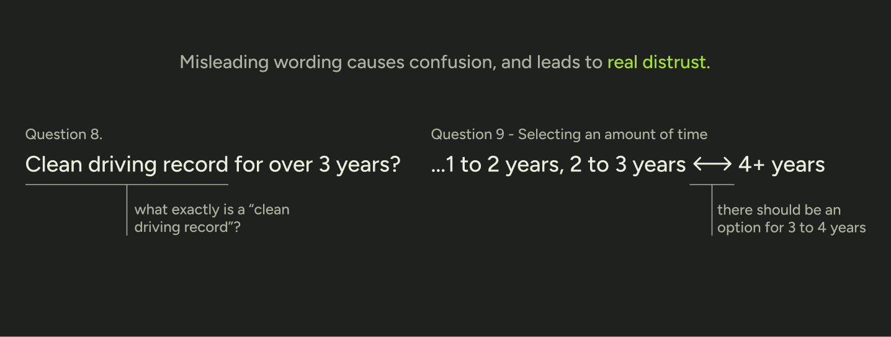
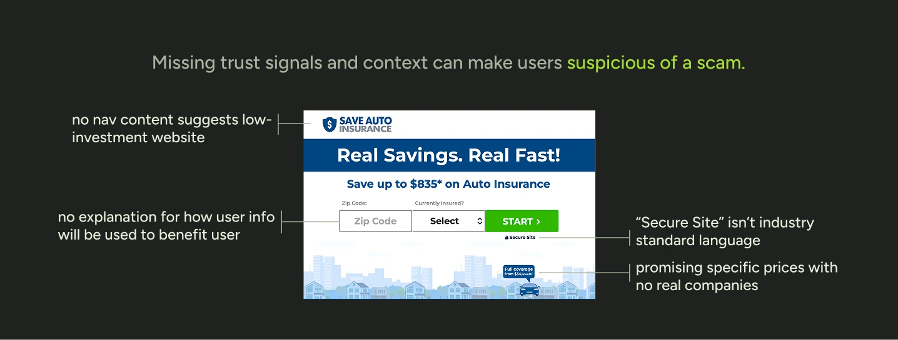
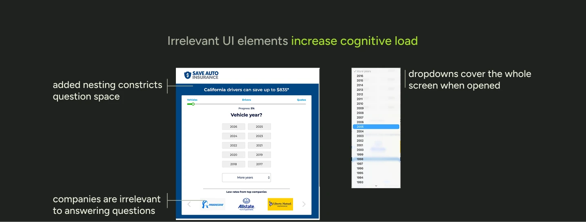
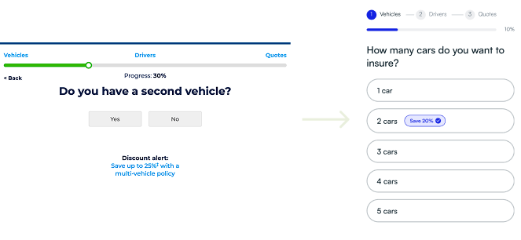
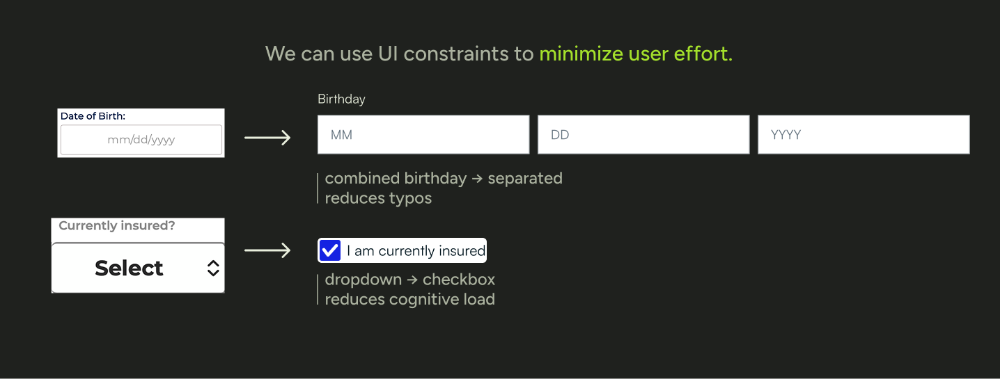
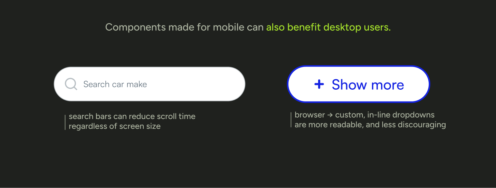

you have three minutes before you get to work to shop for auto insurance. so why does it take five?

context
an essential driver of new policy purchases
Saveautoinsurance.com allows users to calculate policy price estimates from multiple partners like Progressive and Statefarm, and makes $100,000+ in revenue each month.
01
02
problem
A significant percentage of users give up before completing their quote
due to confusing copywriting, missing trust signals, and cognitive overload.



user research
competitive analysis and user testing
I started with a competitive analysis of our 3 main competitors; key features, question grouping, and overall aesthetic. I continued with user testing, timing 6 users completing each quote with a premade profile.
01
02
Saveautoinsurance.com
Insurify
Nerdwallet
03
when designing for SaveAuto, we need to:
insight
support user recall throughout the flow to increase confidence
1 of 2
Design Decision 1
Reducing user cognitive load
like, “what car am I talking about again? and have I already filled in my husband’s information?”
reorganizing the flow
Originally, users who wanted to add more than one car or person had to click a button for each additional object. I designed my prototype so that users could simply set the desired amount once.
01

adding breadcrumbs
User testing showed that car and policyholder information required frequent recall, so I added breadcrumbs to remind users where they are in the process.
02
maintaining consistency
Users shouldn’t have to wonder if two different things mean the same thing. I rewrote copy to have a consistent tone of voice, and made sure interaction outcomes were consistent.
03
Design Decision 2
Reducing friction with the interface
because less friction means higher retention and completion.


proposal
what i presented to senior leadership
I took my final prototypes and presented them to the greater Arity organization, including the president. I took them through the different stages of the design process; scoping, research, prototyping, and user testing.
01
02
result
A success on all measurable outcomes
and some discussion about unmeasurable outcomes
01
4:33 → 2:07
a leap forward to becoming competitive in terms of speed
02
“Feels much cleaner...doesn’t feel like it would spam my phone”
-data analytics intern
03
shipped! homepage incorporated into current rebuild, flow placed on the timeline